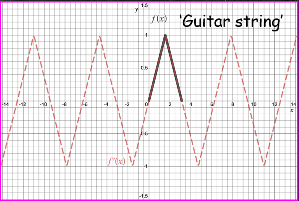

Jonathan Crofts
Nottingham Trent University
Note that unusually for a PDE, the wave equation can be solved to obtain a general solution for given initial data.
Given the wave equation
\[ \frac{\partial^2 u}{\partial t^2}=c^2\frac{\partial^2 u}{\partial x^2} \]we can introduce new independent variables
\[ v = x+ct ~\text{ and }~ w=x-ct \]such that the wave equation reduces to
\[ \color{#00FF00}{\boxed{\color{white}{ \frac{\partial^2 u}{\partial v\partial w} = 0 }}} \]To see this note
\[ u_x = \frac{\partial u}{\partial v}\frac{\partial v}{\partial x}+\frac{\partial u}{\partial w}\frac{\partial w}{\partial x} = u_v+u_w \]and
\[ \begin{align*} u_{xx} = \frac{\partial}{\partial x}(u_v+u_w)&=u_{vv}v_x+u_{vw}w_x+u_{wv}v_x+u_{ww}w_x\\ &= u_{vv}+2u_{vw}+u_{ww} \end{align*} \]The last line follows since $u_{vw}=u_{wv}$
Using the exact same procedure as above (exercise)
\[ u_{tt} = c^2(u_{vv}-2u_{vw}+u_{ww}) \]Substituting these results into the wave equation gives...
\[ \begin{align*} u_{xx} &= u_{vv}+2u_{vw}+u_{ww}\\ u_{tt} &= c^2(u_{vv}-2u_{vw}+u_{ww}) \end{align*} \]So that the wave equation becomes:
\[ c^2(u_{vv}-2u_{vw}+u_{ww}) = c^2(u_{vv}+2u_{vw}+u_{ww}) \implies u_{vw}=0 \]Or
\[ \color{red}{\boxed{\color{white}{ \frac{\partial^2 u}{\partial v\partial w} = 0 }}} \]As required.
We can solve this equation by direct integration, i.e.
\[ \begin{align*} u_{vw} = 0 \implies u_v = h(v) \implies u(v,w) &= \int h(v)\mathrm{d}v+\psi(w)\\ &= \phi(v)+\psi(w) \end{align*} \]Recalling that $v=x+ct$ and $w=x-ct$ gives the solution
\[ \color{#00FF00}{\boxed{\color{white}{ u(x,t) = \phi(x+ct)+\psi(x-ct) }}} \]In words: the general solution is a sum of left and right travelling waves with profiles given by the functions $\phi$ and $\psi$
Suppose we have the ICs $~~u(x,0) = f(x)~~$ and $~~u_t(x,0) = g(x)$, then from d'Alembert's solution of the wave equation we have
\[ \begin{align} u(x,0) &= \phi(x)+\psi(x) = f(x)\\\nonumber u_t(x,0)&= c\phi'(x)-c\psi'(x) = g(x) \end{align} \]Integrating the second equation gives
\[ \begin{equation} \phi(x)-\psi(x) = k(x_0)+\frac{1}{c}\int_{x_0}^x g(s)\mathrm{d}s \end{equation} \]where $k = \phi(x_0)-\psi(x_0)$
Adding equations (1) and (2) gives
\[ 2\phi(x) =f(x)+k(x_0)+\frac{1}{c}\int_{x_0}^x g(s)\mathrm{d}s \]Whilst subtracting (2) from (1) gives
\[ \begin{align*} 2\psi(x) &=f(x)-k(x_0)-\frac{1}{c}\int_{x_0}^xg(s)\mathrm{d}s\\ &=f(x)-k(x_0)+\frac{1}{c}\int_x^{x_0}g(s)\mathrm{d}s \end{align*} \]Putting this altogther gives an expression for $u(x,t)...$
...
\[ \begin{align*} u(x,t) &= \phi(x+ct)+\psi(x-ct)\\ &= \frac{1}{2}\left[f(x+ct)+k(x_0)+\frac{1}{c}\int_{x_0}^{x+ct} g(s)\mathrm{d}s\right]+\\ &+\frac{1}{2}\left[f(x-ct)-k(x_0)+\frac{1}{c}\int_{x-ct}^{x_0}g(s)\mathrm{d}s\right]\\ &= \color{#00FF00}{\boxed{\color{white}{ \frac{1}{2}\left[f(x+ct)+f(x-ct)\right] + \frac{1}{2c}\int_{x-ct}^{x+ct} g(s)\mathrm{d}s }} } \end{align*} \]The above derivation is examinable
Suppose we solve the following wave equation using separation of variables
\[ \frac{\partial^2 u}{\partial t^2} = c^2\frac{\partial^2 u}{\partial x^2}, \quad x\in(0,L), u(0,t)=u(0,L)=0 \]And ICs $u(x,0) = f(x)$ and $u_t(x,0)=0$ (the second for simplicity)
It can be shown that
\[ \color{red}{\boxed{\color{white}{ u(x,t) = \sum_{n=1}^\infty E_n\sin\left(\frac{n\pi}{L}x\right)\cos\left(\frac{n\pi}{L}t\right) }}} \]Now using trig identity we can write
\[ \sin\left(\frac{n\pi}{L}x\right)\cos\left(\frac{n\pi c}{L}t\right) = \frac{1}{2}\left[\sin\left(\frac{n\pi}{L}(x-ct)\right)+\sin\left(\frac{n\pi}{L}(x+ct)\right)\right] \]Consequently we can write our separable solution as
\[ \begin{align*} u(x,t) &= \sum_{n=1}^\infty E_n\sin\left(\frac{n\pi}{L}x\right)\cos\left(\frac{n\pi c}{L}t\right)\\ &= \frac{1}{2}\sum_{n=1}^\infty E_n\sin\left(\frac{n\pi}{L}(x-ct)\right) + \frac{1}{2}\sum_{n=1}^\infty E_n\sin\left(\frac{n\pi}{L}(x+ct)\right) \end{align*} \]Recalling that
\[ u(x,0) = \sum_{n=1}^\infty E_n\sin\left(\frac{n\pi}{L}x\right) = f(x)\qquad \text{We see that...} \]...
\[ \begin{align*} u(x,t)&=\frac{1}{2}\sum_{n=1}^\infty E_n\sin\left(\frac{n\pi}{L}(x-ct)\right) + \frac{1}{2}\sum_{n=1}^\infty E_n\sin\left(\frac{n\pi}{L}(x+ct)\right)\\ &=\frac{1}{2}\left[F(x-ct)+F(x+ct)\right] \end{align*} \]Here, $F$ is the odd extension of the function $f$ with period $T=2L$
$F(x\pm ct)$ is obtained from the graph of $F$ by shifting the latter by $ct$ units
Thus $F(x\pm ct)$ represent left or right travelling waves
The seperable solution corresponds to standing waves whilst d'Alembert's solution corresponds to travelling waves
In the separable solution above, the travelling waves interfere to produce standing waves
Let us consider Example 4.3 from the online notes, i.e. the wave equation with zero BCs and ICs given by
\[ u(x,0) = f(x) = \begin{cases}\frac{2x}{\pi}&x\in[0,\pi/2]\\\frac{2}{\pi}(\pi-x)&x\in[\pi/2,\pi]\end{cases} \]and
\[ u_t(x,0) = g(x)=0\qquad\qquad\qquad \]Here $L=\pi$ and $c=1$
A guitar string plucked and released from rest
This problem can be solved to obtain the solution
\[ u(x,t) = \sum_{n=1}^\infty \frac{8}{n^2\pi^2}\sin\left(\frac{n\pi}{2}\right)\sin(nx)\cos(nt) \]Which can be rewritten as
\[ \begin{align*} u(x,t)&=\frac{1}{2}\sum_{n=1}^\infty \frac{8}{n^2\pi^2}\sin\left(\frac{n\pi}{2}\right)\sin(n(x-t))+\\ &\frac{1}{2}\sum_{n=1}^\infty\frac{8}{n^2\pi^2}\sin\left(\frac{n\pi}{2}\right)\sin(n(x+t))\\ &=F(x-t)+F(x+t) \end{align*} \]Here $F(x)$ is the odd extension of the function $f$
The video below illustrates the point
The standing wave in black is the sum of the left and right travelling waves (blue and red, respectively)